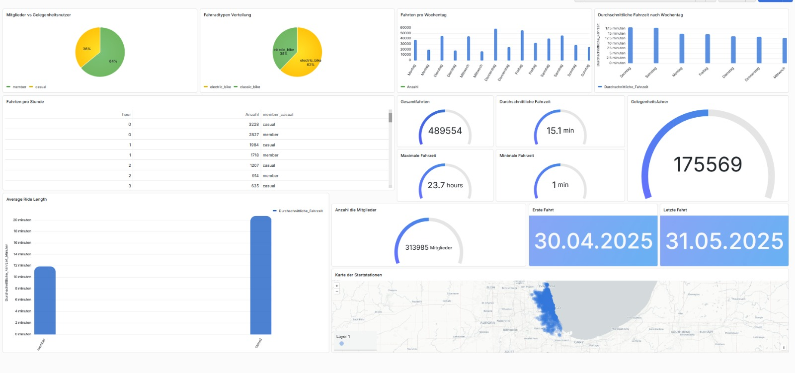

How does a bike-share navigate speedy success?
Python / Pandas
SQL / MySQL
Grafana
Excel

Klicken zum Vergrößern
64% / 36%
Member / Casual
Meine Arbeitsschritte
- Datenbank-Design: Erstellung einer MySQL-Datenbank mit 13 Spalten für über 500.000 Datensätze
- Datenbereinigung (Python/Pandas): Entfernung von Ausreißern (Fahrten < 1 Min. & > 24 Std.), Behandlung von Fehlwerten
- Analyse & Visualisierung: Berechnung von Ride Length, Day of Week, Hourly Patterns – Visualisierung mit Grafana
- Handlungsempfehlungen: Ableitung von 3 Marketing-Strategien zur Konvertierung von Gelegenheitsnutzern
Meine Empfehlungen
📅 Weekend-Only Membership: Spezielles Wochenend-Abo für Freizeitfahrer (Peak an Samstagen & Sonntagen)
☀️ Summer Seasonal Pass (Mai-Oktober): Saisonale Mitgliedschaft für warme Monate
👨👩👧👦 Family/Groups Package: Gruppenrabatte für Familien und Freundesgruppen (längere Fahrten bei Casual)
Visualisiert mit Grafana: Mitglieder vs. Gelegenheitsnutzer | Fahrradtypen | Fahrten pro Stunde/Wochentag | Durchschnittliche Fahrzeiten